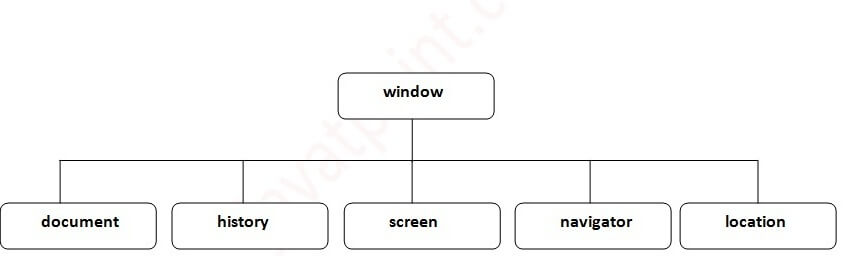

Introdaction to BOM
Browser Object Model (BOM) allows JavaScript to "INTRACT WITH" the browser.
The Browser Object Model (BOM) is a collection of objects exposed by the browser that allow JavaScript to
interact with the browser window, document, and other browser-specific functionalities. The BOM includes
objects such as Window, Navigator, Location, History, and Screen.

The Window Object
The window object is supported by all browsers. It represents the browser's window.
All global JavaScript objects, functions, and variables automatically become members of the window object.
Global variables are properties of the window object.
Global functions are methods of the window object.
Even the document object (of the HTML DOM) is a property of the window object:-
Ex. :- window.document.getElementById("header");
Window Size
Two properties can be used to determine the size of the browser window.
the inner/outer height/width of the browser window (in pixels)
window.innerHeight
window.outerHeight
window.innerWidth
window.outerWidth
Some other methods:
window.open() - open a new window
window.close() - close the current window
window.moveTo() - move the current window (Absolute)
window.moveBy() - move the current window (Relative)
window.resizeTo() - resize the current window (Absolute)
window.resizeBy() - resize the current window (Relative)
<body onresize="resizeBody()">
function resizeBody(){
var height = window.innerHeight;
var width = window.innerWidth;
console.log("height :-",height," Width :-",width)
}
</body>
Window open()
window.open(URL, name, specs, replace)
window.open("https://www.fb.com", "facebook", "width=100,height=100,left=200,top=200")
window.open("index.html", "", "width=100,height=100,left=200,top=200")
url :- Open new window page.
name :- name , _blank , _self , _parent , _top
specification :- width , hight , left ,top.....
replace :- true :- URL replaces the current document in the history list, false :- URL
creates a new entry in the history list. (some browser provide error apply this parameter)
<body>
<h1> Window Object :- open() and close() Methods</h1>
<button onclick="openWin()">Open "myWindow"</button>
<button onclick="closeWin()">Close "myWindow"</button>
<script>
let myWindow;
function openWin() {
myWindow = window.open("", "", "width=200,height=100");
}
function closeWin() {
myWindow.close();
}
</script>
</body>
window other method
<body>
<button onclick="openWin()">Open myWindow</button>
<button onclick="moveFunc()">Move window</button>
<script>
let myWindow;
function openWin() {
myWindow = window.open("", "", "width=200,height=100");
myWindow.document.write("I am open window")
}
function moveFunc() {
myWindow.moveTo(300,300);
// myWindow.moveBy(100,100);
// myWindow.resizeTo(100,100);
// myWindow.resizeBy(100,100);
// scrollTo(100,100); // on same page & button position fixed
// scrollBy(100,100);
}
</script>
</body>
Window Location Object
Location object contains information about the current URL.
Location object is a property of the window object.
Location object is accessed with:
window.location or just location
Property
• hash :- Sets or returns the anchor part (#) of a URL
• host :- Sets or returns the hostname and port number of a URL
• hostname :- Sets or returns the hostname of a URL
• href :- Sets or returns the entire URL
• origin :- Returns the protocol, hostname and port number of a URL
• pathname :- Sets or returns the path name of a URL
• port :- Sets or returns the port number of a URL
• protocol :- Sets or returns the protocol of a URL
• search :- Sets or returns the querystring part of a URL
Location Object Methods
•assign():- Loads a new document
•reload():- Reloads the current document
•replace():- Replaces the current document with a new one.
Window History Object
• back() :- Loads the previous URL (page) in the history list
• forward() :- Loads the next URL (page) in the history list
• go(-1) :- Loads a specific URL (page) from the history list
• length :- Returns the number of URLs (pages) in the history list
<button onclick="history.back()">Go Back</button>
Window Navigator
The window.navigator object can be written without the window prefix.
Some examples:
• navigator.cookieEnabled //true
• navigator.appCodeName
• navigator.platform
• navigator.appName;
• navigator.product;
• navigator.appVersion;
• navigator.platform;
• navigator.language;
• navigator.onLine;
Timing Events
The window object allows execution of code at specified time intervals.
These time intervals are called timing events.
The two key methods to use with JavaScript are:
setTimeout(function, milliseconds)
setInterval(function, milliseconds)
Same as setTimeout(), but repeats the execution of the function continuously.
The setTimeout() and setInterval() are both methods of the HTML DOM Window object.
Examples of Timing function
window.setTimeout(funcName, milliseconds);
window.setInterval(funcName, milliseconds);
<button onclick="clearTimeout(myVarriable)">Clear time out</button>
<button onclick="clearInterval(myVarriable)">Clear interval</button>
let myVarriable = window.setTimeout(funcName, 3000);
function funcName(){
console.log('calling after 3 second')
}